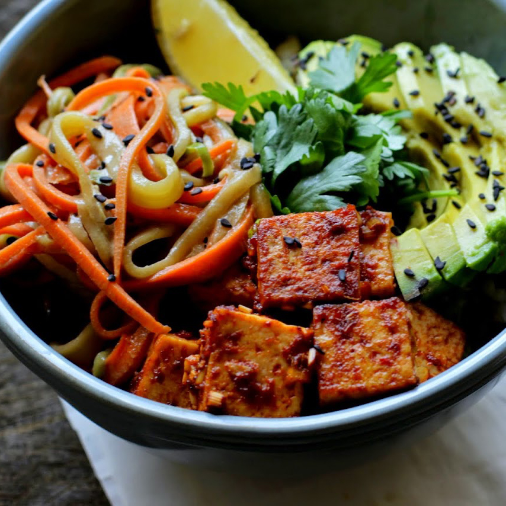
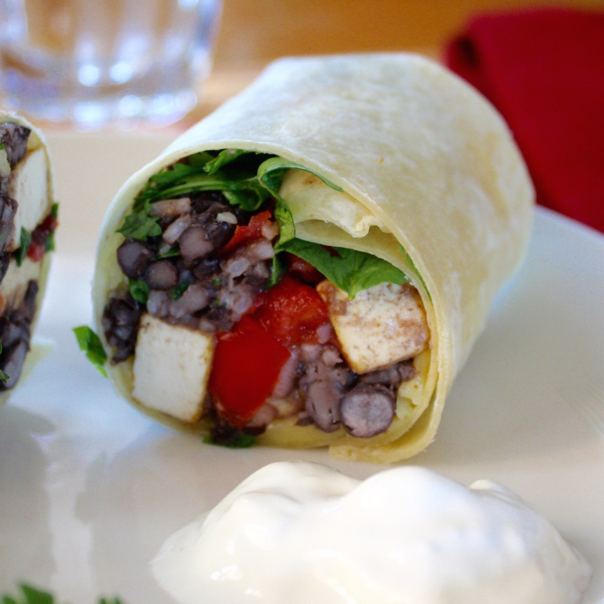
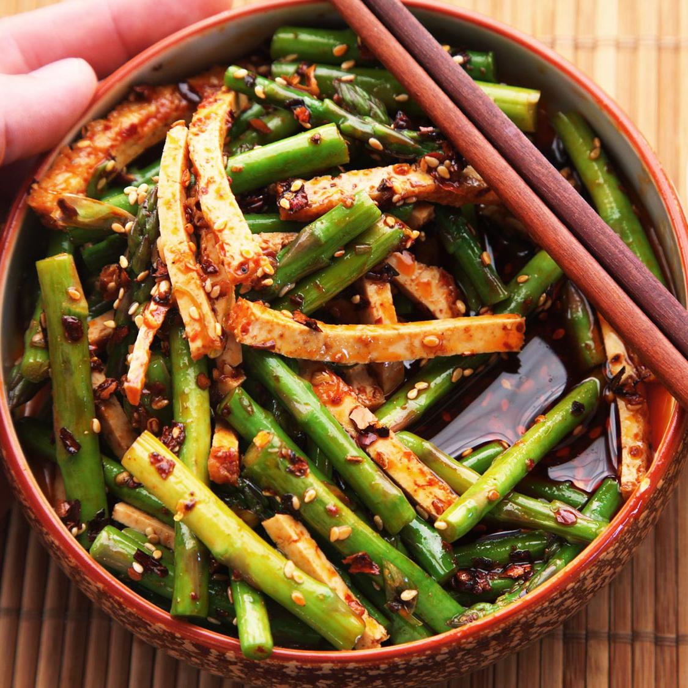
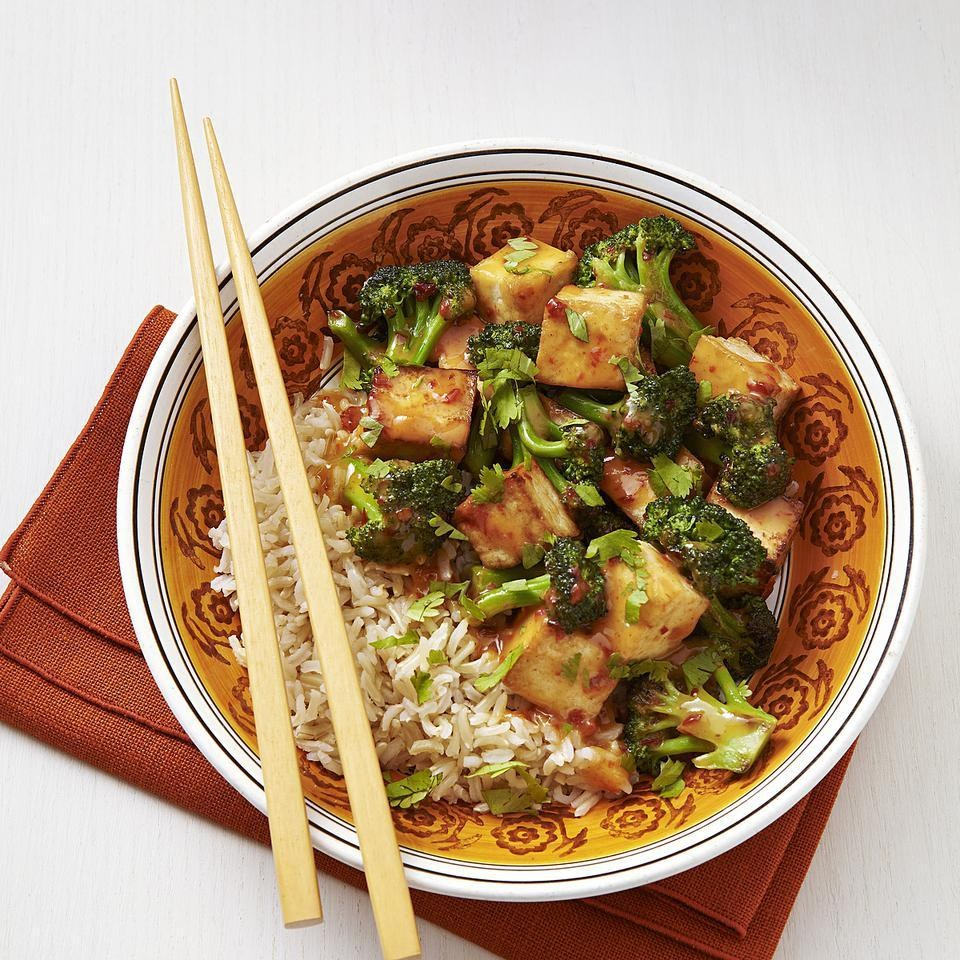
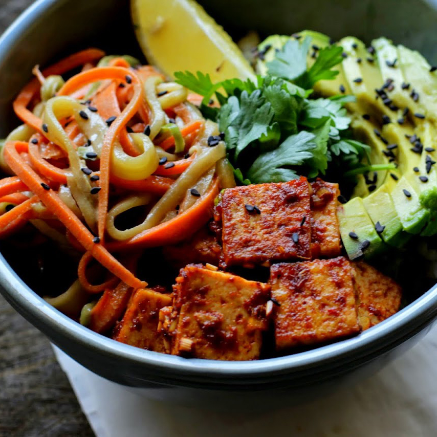
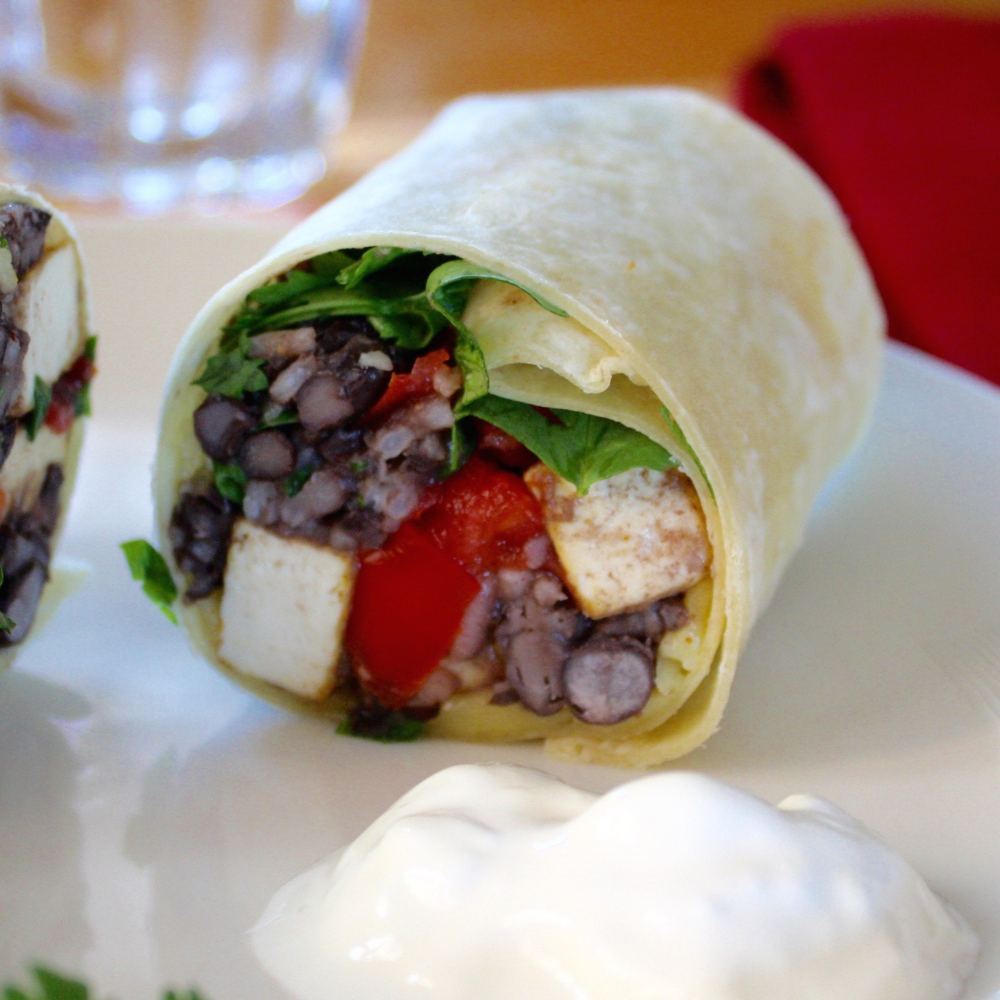
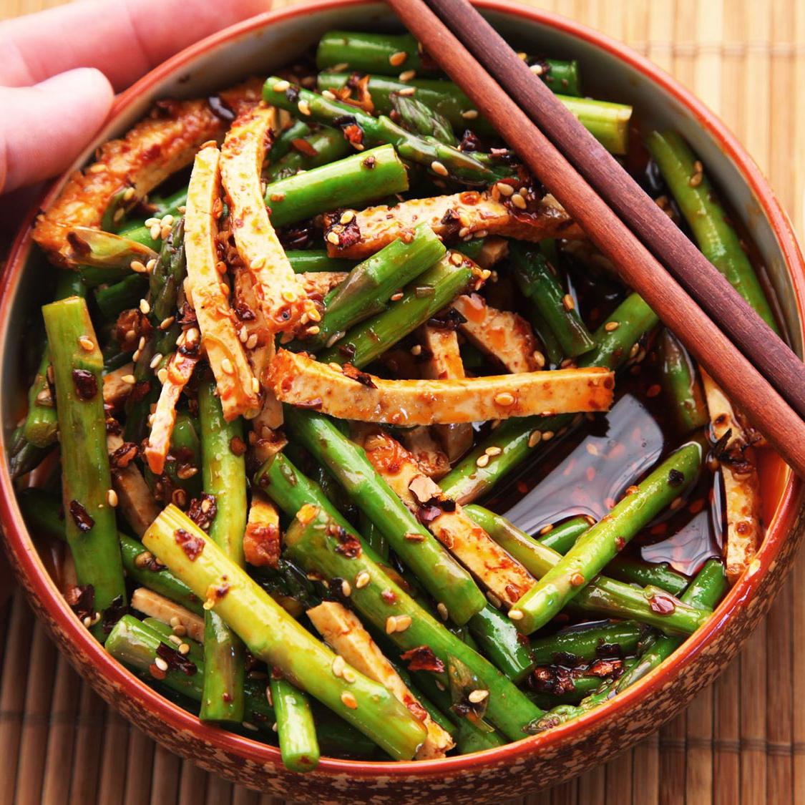
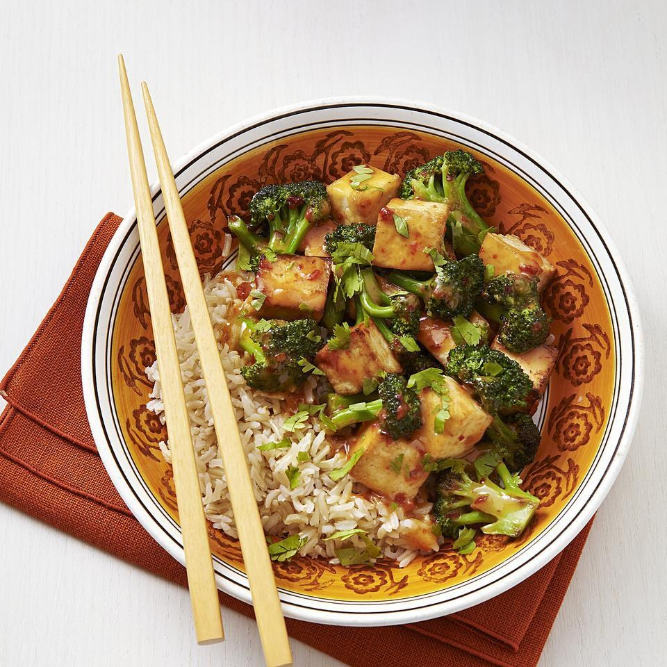

What's tofu?
Tofu, or bean curd, is a popular food derived from soya. It is made by curdling fresh soya milk, pressing it into a solid block and then cooling it – in much the same way that traditional dairy cheese is made by curdling and solidifying milk. The liquid (whey) is discarded, and the curds are pressed to form a cohesive bond. A staple ingredient in Thai and Chinese cookery, it can be cooked in different ways to change its texture from smooth and soft to crisp and crunchy.
Like many soya foods, tofu originated in China. Legend has it that it was discovered about 2000 years ago by a Chinese cook who accidentally curdled soy milk when he added nigari seaweed. Introduced into Japan in the eighth century, tofu was originally called okabe. Its modern name did not come into use until 1400. By the 1960s, interest in healthy eating brought tofu to Western nations. Since that time, countless research has demonstrated the many benefits that soya and tofu can provide.
 






